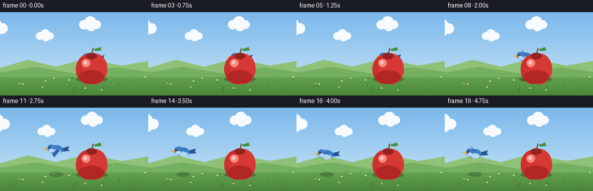
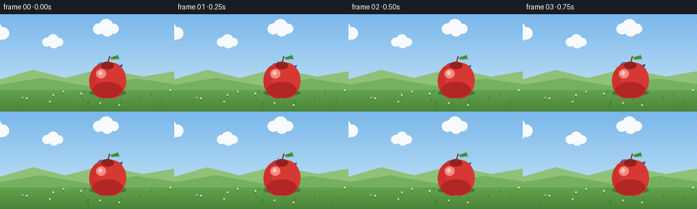

CODING AGENTS AS PIXEL WORLD MODELS
traex/Seed-2.1-Pro-0915 · dynamic_spatial_relationship_0037
点击播放 · 原生 RGB 像素
逐轮保存的候选
回放视频、检查图与代码变化。
每份候选均可单独播放。实际图片检查记录在下方工具轨迹中。
候选 01播放与检查图
点击播放 · 原生 RGB 像素


展开代码变化
--- 上一保存版本
+++ 本次保存版本
@@ -0,0 +1,224 @@
+"""Text-to-video generation for:
+"A bird is behind a apple, then the bird flies to the left of the apple."
+
+Pure local rendering with PIL/numpy: 20 RGB frames, 256x144, 4 fps.
+Scene is drawn at 2x supersampling and downscaled for smooth edges.
+"""
+import math
+from pathlib import Path
+
+import numpy as np
+from PIL import Image, ImageDraw
+
+import artifact_io
+
+CASE_DIR = Path(__file__).parent
+W, H, N, FPS = 256, 144, 20, 4
+S = 2 # supersampling factor
+
+# Key anchors (in final-resolution coordinates).
+APPLE_X, APPLE_Y, APPLE_R = 158.0, 96.0, 27.0
+BIRD_START_X = APPLE_X # bird begins centered behind the apple
+BIRD_END_X = 52.0 # clearly left of the apple
+BIRD_Y = 80.0 # slightly above apple center so wings peek out
+
+
+def lerp(a, b, t):
+ return a + (b - a) * t
+
+
+def ease_in_out(t):
+ return 0.5 - 0.5 * math.cos(math.pi * t)
+
+
+def draw_background(draw, frame):
+ """Sky gradient, drifting clouds, hills, grass, flowers."""
+ top = np.array([122, 183, 235], dtype=float)
+ bottom = np.array([205, 233, 247], dtype=float)
+ for y in range(H * S):
+ t = y / (H * S - 1)
+ color = tuple((lerp(top, bottom, t)).astype(int))
+ draw.line([(0, y), (W * S, y)], fill=color)
+
+ # Drifting clouds (slow parallax).
+ for base_x, cy, scale in [(30, 26, 1.0), (196, 20, 0.8), (118, 40, 0.65)]:
+ drift = (frame * 0.35 * scale) % (W + 80) - 40
+ cx = (base_x + drift) * S
+ cyy = cy * S
+ for dx, dy, r in [(-14, 2, 10), (0, -3, 13), (14, 2, 9), (2, 5, 11)]:
+ box = [cx + (dx - r) * scale * S, cyy + (dy - r) * scale * S,
+ cx + (dx + r) * scale * S, cyy + (dy + r) * scale * S]
+ draw.ellipse(box, fill=(247, 251, 255))
+
+ # Distant hills.
+ ground_y = 112
+ draw.polygon([(0, ground_y * S), (0, 96 * S), (48 * S, 82 * S),
+ (96 * S, 94 * S), (150 * S, 80 * S), (210 * S, 92 * S),
+ (W * S, 84 * S), (W * S, ground_y * S)],
+ fill=(143, 193, 120))
+ draw.polygon([(0, ground_y * S), (0, 104 * S), (60 * S, 94 * S),
+ (130 * S, 106 * S), (200 * S, 95 * S), (W * S, 103 * S),
+ (W * S, ground_y * S)],
+ fill=(116, 176, 96))
+
+ # Grass band with subtle vertical gradient.
+ for y in range(ground_y * S, H * S):
+ t = (y - ground_y * S) / max(1, (H - ground_y) * S - 1)
+ color = tuple(int(lerp(g0, g1, t)) for g0, g1 in
+ zip((99, 163, 78), (74, 133, 58)))
+ draw.line([(0, y), (W * S, y)], fill=color)
+
+ # Static little flowers / grass tufts.
+ rng = np.random.default_rng(7)
+ for _ in range(26):
+ fx = int(rng.integers(4, W - 4)) * S
+ fy = int(rng.integers(ground_y + 4, H - 3)) * S
+ draw.line([(fx, fy), (fx, fy - 4 * S)], fill=(64, 120, 50), width=S)
+ if rng.random() < 0.5:
+ petal = [(236, 229, 130), (240, 158, 178), (230, 230, 240)][int(rng.integers(0, 3))]
+ draw.ellipse([fx - S, fy - 5 * S, fx + S, fy - 3 * S], fill=petal)
+
+
+def draw_shadow(draw, x, y, rx, ry, alpha=90):
+ overlay = Image.new("RGBA", (W * S, H * S), (0, 0, 0, 0))
+ od = ImageDraw.Draw(overlay)
+ od.ellipse([(x - rx) * S, (y - ry) * S, (x + rx) * S, (y + ry) * S],
+ fill=(40, 60, 35, alpha))
+ return overlay
+
+
+def draw_bird(draw, cx, cy, flap, facing=-1):
+ """Cartoon bluebird. facing=-1 looks left, +1 looks right."""
+ s = S
+ f = facing
+ body_c = (62, 125, 201)
+ belly_c = (181, 214, 240)
+ dark_c = (38, 84, 145)
+ beak_c = (240, 168, 60)
+
+ # Tail feathers (behind body).
+ tx = cx - f * 11
+ draw.polygon([(tx * s, (cy - 3) * s), ((tx - f * 11) * s, (cy - 6) * s),
+ ((tx - f * 9) * s, (cy - 1) * s), ((tx - f * 12) * s, (cy + 2) * s),
+ (tx * s, (cy + 3) * s)], fill=dark_c)
+
+ # Body.
+ draw.ellipse([(cx - 11) * s, (cy - 8) * s, (cx + 11) * s, (cy + 8) * s], fill=body_c)
+ # Belly.
+ draw.ellipse([(cx - 7) * s, (cy - 1) * s, (cx + 8) * s, (cy + 8) * s], fill=belly_c)
+
+ # Flapping wing: pivot on upper body, flap in [-1, 1].
+ px, py = cx - f * 2, cy - 2
+ tip_dx = f * 9
+ tip_dy = -10 * flap - 1
+ wing = [(px * s, py * s),
+ ((px + tip_dx) * s, (py + tip_dy) * s),
+ ((px + tip_dx - f * 3) * s, (py + tip_dy + 6) * s),
+ ((px - f * 4) * s, (py + 4) * s)]
+ draw.polygon(wing, fill=(48, 101, 172))
+ draw.line([wing[0], wing[1]], fill=dark_c, width=max(1, s // 2))
+
+ # Head (front side).
+ hx = cx + f * 9
+ draw.ellipse([(hx - 6.5) * s, (cy - 9) * s, (hx + 6.5) * s, (cy + 4) * s], fill=body_c)
+ # Cheek.
+ draw.ellipse([(hx - 4) * s, (cy - 2) * s, (hx + 5) * s, (cy + 4) * s], fill=belly_c)
+ # Beak.
+ bx = hx + f * 6
+ draw.polygon([(bx * s, (cy - 4) * s), ((bx + f * 7) * s, (cy - 1.5) * s),
+ (bx * s, (cy + 1) * s)], fill=beak_c)
+ # Eye.
+ ex, ey = hx + f * 2.5, cy - 4
+ draw.ellipse([(ex - 1.6) * s, (ey - 1.6) * s, (ex + 1.6) * s, (ey + 1.6) * s],
+ fill=(20, 28, 40))
+ draw.ellipse([(ex - 0.4) * s, (ey - 1.0) * s, (ex + 0.8) * s, (ey + 0.2) * s],
+ fill=(255, 255, 255))
+
+
+def draw_apple(draw, cx, cy, r):
+ s = S
+ # Apple body: two overlapping lobes for the characteristic dimple.
+ draw.ellipse([(cx - r) * s, (cy - r * 0.85) * s,
+ (cx + r * 0.55) * s, (cy + r * 1.05) * s], fill=(206, 48, 45))
+ draw.ellipse([(cx - r * 0.55) * s, (cy - r * 0.9) * s,
+ (cx + r) * s, (cy + r * 1.05) * s], fill=(214, 57, 52))
+ # Bottom shading.
+ draw.ellipse([(cx - r * 0.8) * s, (cy + r * 0.15) * s,
+ (cx + r * 0.8) * s, (cy + r * 1.02) * s], fill=(178, 38, 38))
+ # Top dimple.
+ draw.ellipse([(cx - r * 0.35) * s, (cy - r * 0.95) * s,
+ (cx + r * 0.35) * s, (cy - r * 0.55) * s], fill=(150, 32, 32))
+ # Specular highlight.
+ draw.ellipse([(cx - r * 0.62) * s, (cy - r * 0.55) * s,
+ (cx - r * 0.08) * s, (cy - r * 0.05) * s], fill=(245, 138, 128))
+ draw.ellipse([(cx - r * 0.5) * s, (cy - r * 0.45) * s,
+ (cx - r * 0.28) * s, (cy - r * 0.22) * s], fill=(252, 196, 188))
+ # Stem.
+ draw.line([(cx * s, (cy - r * 0.8) * s),
+ ((cx + 3) * s, (cy - r * 1.25) * s)], fill=(107, 68, 35), width=2 * s)
+ # Leaf.
+ lx, ly = cx + 4, cy - r * 1.18
+ draw.polygon([(lx * s, ly * s), ((lx + 11) * s, (ly - 4) * s),
+ ((lx + 13) * s, (ly + 2) * s), ((lx + 2) * s, (ly + 3) * s)],
+ fill=(72, 148, 62))
+ draw.line([(lx * s, ly * s), ((lx + 11) * s, (ly - 1) * s)],
+ fill=(48, 110, 44), width=max(1, s // 2))
+
+
+def bird_position(frame):
+ """Return (x, y, flap_phase) for the bird at frame index."""
+ # Frames 0-5: hovering behind the apple.
+ hover_end, fly_end = 5, 16
+ if frame <= hover_end:
+ x = BIRD_START_X
+ t = 0.0
+ elif frame <= fly_end:
+ t = ease_in_out((frame - hover_end) / (fly_end - hover_end))
+ x = lerp(BIRD_START_X, BIRD_END_X, t)
+ else:
+ x = BIRD_END_X
+ t = 1.0
+ # Bobbing: small hover bob, larger arc while flying, gentle settle.
+ if frame <= hover_end:
+ y = BIRD_Y + 1.6 * math.sin(frame * 1.15)
+ elif frame <= fly_end:
+ y = BIRD_Y - 7 * math.sin(math.pi * t) + 1.4 * math.sin(frame * 1.7)
+ else:
+ y = BIRD_Y + 1.3 * math.sin((frame - fly_end) * 1.1)
+ # Wing flap speed rises during flight.
+ speed = 0.9 if frame <= hover_end or frame > fly_end else 2.1
+ flap = math.sin(frame * speed * math.pi / 2.0)
+ return x, y, flap
+
+
+def render_frame(frame):
+ img = Image.new("RGB", (W * S, H * S))
+ draw = ImageDraw.Draw(img)
+ draw_background(draw, frame)
+
+ bx, by, flap = bird_position(frame)
+
+ # Ground shadows (depth cue); bird shadow follows its flight path.
+ img = img.convert("RGBA")
+ img.alpha_composite(draw_shadow(ImageDraw.Draw(img), APPLE_X, 116, APPLE_R, 5, alpha=110))
+ bird_shadow_alpha = int(70 + 25 * (1 - abs(flap) * 0.4))
+ img.alpha_composite(draw_shadow(ImageDraw.Draw(img), bx, 115, 12, 4, alpha=bird_shadow_alpha))
+ draw = ImageDraw.Draw(img)
+
+ # Bird is drawn BEFORE the apple so the apple occludes it while behind.
+ draw_bird(draw, bx, by, flap, facing=-1)
+ # Apple stays static in the foreground.
+ draw_apple(draw, APPLE_X, APPLE_Y, APPLE_R)
+
+ img = img.convert("RGB").resize((W, H), Image.Resampling.LANCZOS)
+ return np.asarray(img, dtype=np.uint8)
+
+
+def main():
+ frames = np.stack([render_frame(i) for i in range(N)], axis=0)
+ artifact_io.save(frames, CASE_DIR)
+ print(f"Saved {N} frames ({W}x{H}, {FPS} fps) to {CASE_DIR}")
+
+
+if __name__ == "__main__":
+ main()
可观测工具轨迹
实际执行的命令与返回图片。
命令 1exit 0
/bin/bash -lc 'cat prompt.txt task_spec.json GENERATION_RULES.md 2>/dev/null; ls -la'
命令 2exit 0
/bin/bash -lc 'cat artifact_io.py'
命令 3exit 0
/bin/bash -lc 'cd . && python generate.py && ls -la'
视觉工具实际返回图片 1

保存候选 1 份；完成命令 3 次；可验证图片返回 1 张。原始 API 响应与完整日志保留在本地。